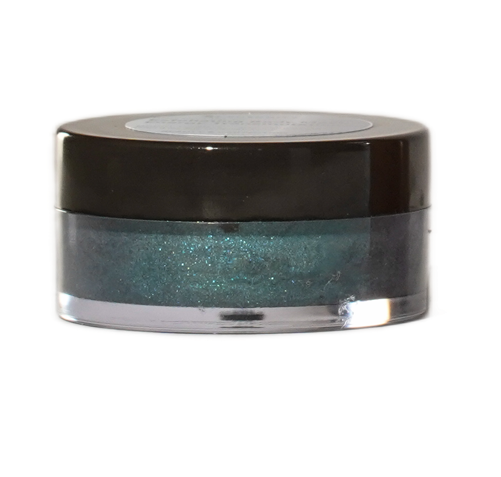

Exfoliating Body Mask - Energy Transmutation
SBR-003-04-26

Description
A bluish-green chemical exfoliating mask developed to discharge and transmute unwanted energies.
With the combination of Ronacare® Salicylic Acid and Ronacare® Malic Acid actives, the formula glides over the skin like an act of renewal, eliminating roughness and dryness accumulated throughout the day. Energy settles with the restorative synergy of Ronacare® Allantoin and Ronacare® Bisabolol, which soothe, hydrate, balance, and restore the skin's natural harmony. Its color is delivered by the blend of pigments: Ronaflux Specular Green and Ronastar Aqua Sparks, which precisely translate transmutation into color, the internal movement that transforms density into vital flow.
The final touch is the body breathing better, lighter, more awake. It's more than exfoliation: it's transmutation.
Formulation Details
| Ingredients | Art. No. | Supplier | INCI | [%] |
|---|---|---|---|---|
| A1 | ||||
| Water, demineralized | AQUA (WATER) | 55.47 | ||
| Sepimax Zen™ | (1) | POLYACRYLATE CROSSPOLYMER-6 | 0.60 | |
| Xanthan Gum | XANTHAN GUM | 0.20 | ||
| EDTA 2Na | EDTA DISODIUM SALT | 0.10 | ||
| A2 | ||||
| Water, demineralized | AQUA (WATER) | 8.00 | ||
| RonaCare® Salicylic Acid extra pure | 1.32261 | (2) | SALICYLIC ACID | 1.00 |
| Sodium Hydroxide, 10% Sol | AQUA (WATER), SODIUM HYDROXIDE | 0.80 | ||
| B | ||||
| Cetostearyl Alcohol | CETEARYL ALCOHOL | 4.00 | ||
| Polymol CP | (3) | CETYL PALMITATE | 2.00 | |
| Polybase Crystal | (4) | GLYCERYL STEARATE, CETEARYL ALCOHOL, STEARIC ACID, SODIUM COCOYL GLUTAMATE | 1.50 | |
| RonaCare® Bisabolol nat. | 1.30170 | (2) | BISABOLOL | 1.00 |
| C | ||||
| Plantacare 818 UP | (5) | COCO-GLUCOSIDE | 5.00 | |
| Sepiplus 400 | (1) | POLYSORBATE 20, POLYACRYLATE 13, POLYISOBUTENE | 0.50 | |
| D | ||||
| Water, demineralized | AQUA (WATER) | 5.00 | ||
| RonaCare® Malic Acid | MALIC ACID | 2.00 | ||
| E | ||||
| Water, demineralized | AQUA (WATER) | 5.00 | ||
| RonaCare® Allantoin | 1.01015 | (2) | ALLANTOIN | 1.00 |
| F | ||||
| Preservative (q.s.) | 0.60 | |||
| Fragrance Galaxy Stars | (6) | PARFUM (FRAGRANCE) | 0.20 | |
| G | ||||
| Ronaflux® Specular Green | 1.17371 | (2) | CI 77891 (TITANIUM DIOXIDE), MICA, SILICA, CARBON | 2.85 |
| Ronastar® Aqua Sparks | 1.17076 | (2) | CALCIUM ALUMINUM BOROSILICATE (OR ALTERNATIVELY: CALCIUM SODIUM BOROSILICATE), CI 77891 (TITANIUM DIOXIDE), SILICA, TIN OXIDE | 2.18 |
| RonaFlair® Satin | 1.17268 | (2) | ILLITE | 1.00 |
| H | ||||
| Sodium Hydroxide, 40% Sol | AQUA (WATER), SODIUM HYDROXIDE | 0.00 |
Total: 100.00%
Procedure
Mix Phase A1, stirring gently until the polymers are fully hydrated, without heating. In a separate container, dissolve the salicylic acid in water (Phase A2) and adjust the pH with sodium hydroxide to 4.8–5.00 (there will be a turning point where the solution turns pink and then yellowish). Then, add Phase A2 to Phase A1 and heat to 75–80°C. Separately, heat Phase B to 75–80°C until completely melted, and incorporate the hot oil phase into the aqueous phase while stirring until a homogeneous system is formed. Begin cooling, and below 40°C, slowly add phase C. With the temperature below 35°C, incorporate the pre-dispersed phases D and E. Add phases F and G. Finally, adjust the pH to between 4 and 4.5 with phase H.
Notes
Appearance: Green cream with acqua sparks pH: 4.0-4.5 Stability: 3 months at 40 °C, 5 °C and RT Apply a thick layer of the mask, leave if for 10-15 min and then rinse with water.
Suppliers
- (1) Seppic
- (2) Susonity Commercial GmbH, Germany and/or its affiliates
- (3) Merck KGaA, Darmstadt, Germany
- (4) AQiA Química Inovativa
- (5) BASF AG
Contact & Legal
Contact: susonitybrasil@susonity.com
© 2026 SUSONITY Commercial GmbH and/or its affiliates. All Rights Reserved.